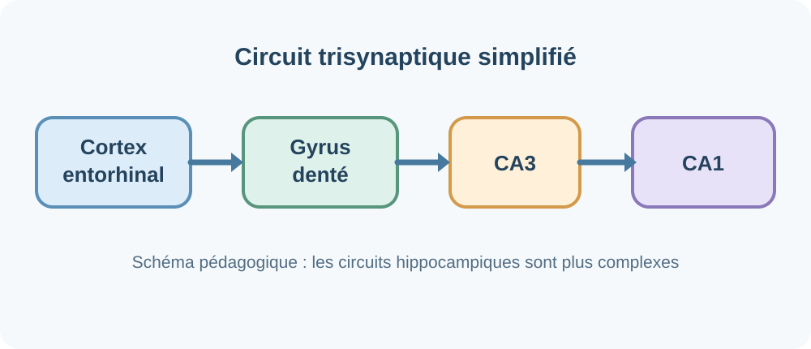
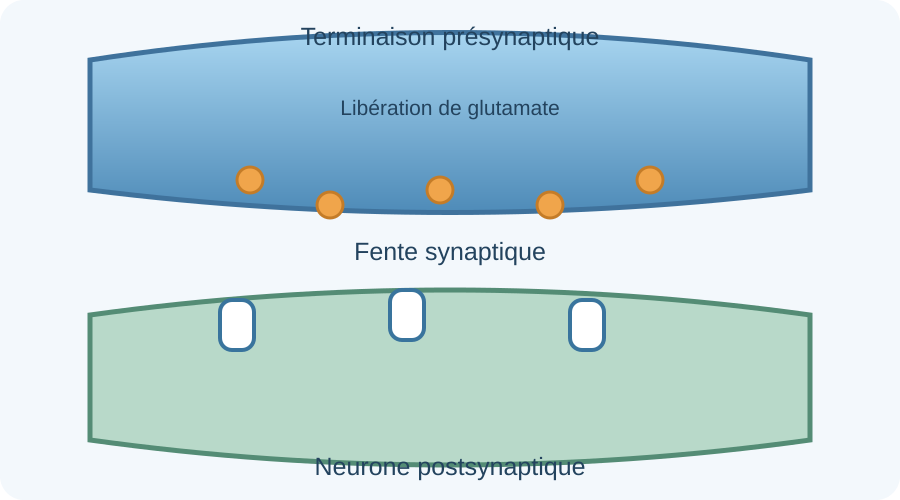

Synaptic plasticity
A change in the effectiveness of transmission between two neurons.
NEUROSCIENCE · LEARNING · HEALTH
Neuroplasticity is the nervous system’s ability to change its organization and function in response to experience, learning, or injury.

01 — THE BASICS
The brain is not a fixed structure. Its neural networks can reorganize throughout life.
Every experience engages neural circuits. During learning, some connections become more effective, others weaken, and new branches may emerge. These changes contribute to knowledge acquisition, memory, and behavioral adaptation.
Plasticity is not always beneficial: some forms of reorganization may contribute to chronic pain, epilepsy, or maladaptive behaviors. It depends on context, age, neural activity, and the brain’s biological state.
A change in the effectiveness of transmission between two neurons.
Changes in dendritic spines, neuronal branching, and network organization.
Reorganization of network activity, particularly during learning or rehabilitation.
02 — BRAIN STRUCTURES
The hippocampus, located in the medial temporal lobe, contributes to the formation of new declarative memories and to spatial memory.

Information arriving from areas such as the entorhinal cortex reaches the dentate gyrus, then the CA3 and CA1 regions of the hippocampus. This trisynaptic circuit is a useful teaching model for understanding some forms of plasticity.
This diagram simplifies a more complex anatomy: the hippocampus receives information from and exchanges information with many brain regions.
Dendrites receive signals, the cell body integrates them, and the axon conducts action potentials toward other cells.
03 — AT THE CELLULAR LEVEL
Long-term potentiation (LTP) is a lasting increase in synaptic effectiveness following certain patterns of activity. It has been studied extensively in the hippocampus.

An action potential reaches the presynaptic terminal. Calcium entry into this terminal triggers vesicle fusion and the release of glutamate into the synaptic cleft.
Glutamate binds to postsynaptic AMPA receptors. Positive ions, mainly Na⁺, enter the cell and depolarize the membrane.
At rest, the NMDA channel is blocked by Mg²⁺. Depolarization partially removes this magnesium block. If glutamate is present, the NMDA channel can then allow Ca²⁺ (and also Na⁺) to enter.
Ca²⁺ binds to proteins such as calmodulin and activates enzymes including CaMKII and some PKC isoforms. These pathways modify synaptic proteins and help increase transmission efficiency.
AMPA receptors can be phosphorylated and more of them can be inserted into the postsynaptic membrane. The postsynaptic response then becomes larger for the same amount of glutamate.
It mainly relies on changes to proteins already present, phosphorylation, and AMPA receptor trafficking. Depending on the protocol and circuit studied, it may last from minutes to a few hours.
More sustained activation can recruit pathways such as PKA and MAPK/ERK, as well as the transcription factor CREB. Gene expression and new protein synthesis contribute to more persistent synaptic changes.
Proteins, including BDNF in some contexts, help stabilize these changes. The shape and size of dendritic spines may also change.
A lasting increase in synaptic effectiveness. It depends on the type of synapse, the activity pattern, and the molecular pathways involved.
A lasting decrease in synaptic effectiveness. In several models, different calcium signals activate phosphatases and promote the removal of AMPA receptors.
LTP and LTD are not simple “memory on/off” switches. They help fine-tune neural networks. Their mechanisms vary across brain regions, synapses, and experimental conditions.
04 — LEARNING & MEMORY
Learning is not simply the passive recording of information. The brain encodes it, links it to existing knowledge, and gradually stabilizes it. The hippocampus plays an important role in forming new declarative memories, while their long-term consolidation involves interactions with the neocortex.
Sleep, spaced repetition, active retrieval, and making meaning from what we learn can support memory. However, none of these alone guarantees protection against neurological disease.
05 — WHEN PLASTICITY IS DISRUPTED
Plasticity can be impaired, insufficient, or sometimes maladaptive. The conditions below have multiple mechanisms; they are not all caused by a simple failure of LTP.
Amyloid and tau pathology, synaptic dysfunction, and neuronal loss progressively disrupt memory networks, often involving the medial temporal structures early in the disease.
In some depressive episodes, chronic stress and biological factors are associated with changes in plasticity and neurotrophic signaling. These mechanisms are not the same in every patient and are not sufficient on their own to explain the disorder.
In some forms, particularly those involving hippocampal sclerosis, neuronal loss and circuit reorganization can contribute to hyperexcitable networks. Some forms of plasticity may then become maladaptive.
After a stroke, intact regions and remaining networks may reorganize. Repetitive, progressive, task-oriented rehabilitation aims to promote functional adaptations.
06 — FROM SCIENCE TO CARE
Care depends on the condition, its cause and severity, and each patient’s circumstances. There is no universal treatment that “switches neuroplasticity back on.”
| Condition | Established interventions | What they aim to do |
|---|---|---|
| After a stroke | Tailored motor rehabilitation, speech and language therapy, occupational therapy, and functional training. | Improve abilities and independence by engaging preserved networks. |
| Alzheimer’s disease | Support, tailored cognitive activities, management of associated factors, and medication depending on disease stage and eligibility. | Support function and quality of life; some targeted treatments may modestly slow decline in selected patients. |
| Depression | Psychotherapy, antidepressants when indicated, and sometimes rTMS or electroconvulsive therapy in specific situations. | Treat the disorder and improve the functioning of networks involved in mood. |
| Epilepsy | Anti-seizure medication; specialist assessment and surgical or neuromodulation options for some drug-resistant cases. | Reduce seizures and control abnormal neuronal activity. |
Tailored, progressive, repeated training is central to many neurological rehabilitation programs.
They support general health and cognitive function. They complement care but do not replace medical treatment.
Techniques such as brain stimulation and personalized approaches are being studied for specific indications.
Medical information: This website is for educational purposes only. It does not provide diagnoses or replace a medical consultation. Do not start or change any medication, supplement, or stimulation protocol without advice from a qualified healthcare professional.
07 — FURTHER READING
Foundational studies and useful reviews for further reading. The links lead to scientific records or articles.
Long-lasting potentiation of synaptic transmission in the dentate area of the anaesthetized rabbit following stimulation of the perforant path. Journal of Physiology, 232, 331–356.
Read the article ↗LTP and LTD: an embarrassment of riches. Neuron, 44(1), 5–21.
Read the article ↗Synaptic plasticity: multiple forms, functions, and mechanisms. Neuropsychopharmacology, 33, 18–41.
Read the article ↗Mechanisms of CaMKII action in long-term potentiation. Nature Reviews Neuroscience, 13, 169–182.
Read the article ↗Neuroinflammation in Alzheimer's disease. The Lancet Neurology, 14(4), 388–405.
Read the article ↗